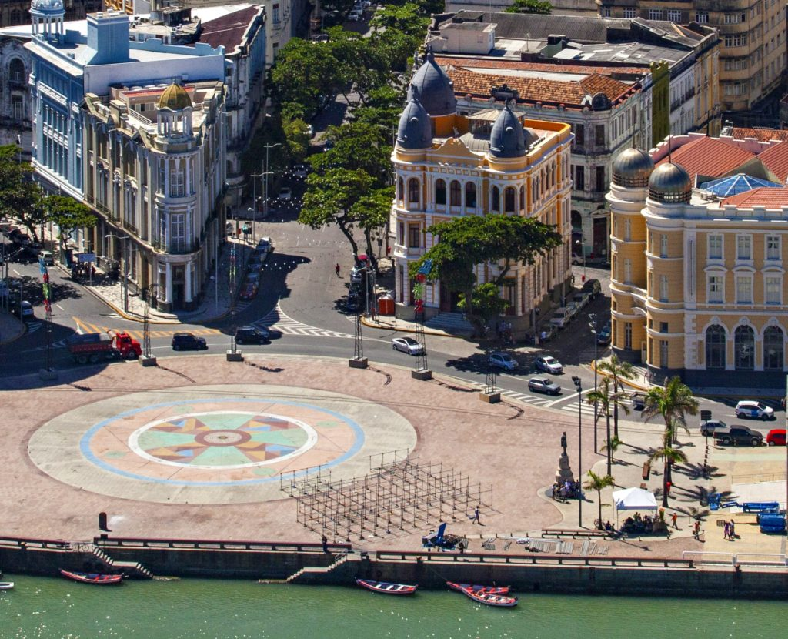

Praça Barão do Rio Branco conhecida como Marco Zero
A praça tem o nome original de Praça Barão do Rio Branco, todavia ficou conhecida como Praça do Marco
Zero pelo fato de que nela encontra-se o quilometro zero das estradas de Pernambuco. É formada por um
marco de cor vermelha doado pelo Clube do Automóvel. Na lateral da praça encontra-se a estatua do Barão
do Rio Branco em bronze, com 2,80m de altura, do escultor Felix Charpentier. Já no centro pode ser vista
a rosa dos ventos do pintor Cícero Dias. Nos períodos de momo a praça funciona como quartel general do
carnaval multicultural do Recife.

Vista de cima da Praça Barão do Rio Branco conhecida como Marco Zero
O Marco Zero do Recife é uma praça que marca o berço da cidade, à beira do Cais do Porto. Localizado no
Recife Antigo. A peça de Cícero Dias instalada na praça possui cerca de 40 m² e é inspirada em sua obra
“Eu vi o mundo… Ele começava no Recife“, é formada por pedras de quartzo e granito com pigmentação
colorida.
Ao norte, a praça é banhada pelo estuário do porto do Recife, formado pelo Rio Capibaribe. Ele é
protegido por um dique natural, onde curiosamente fica o Parque das Esculturas com a famosa obra Coluna
de Cristal, do artista Francisco Brennand, com 32 metros de altura.